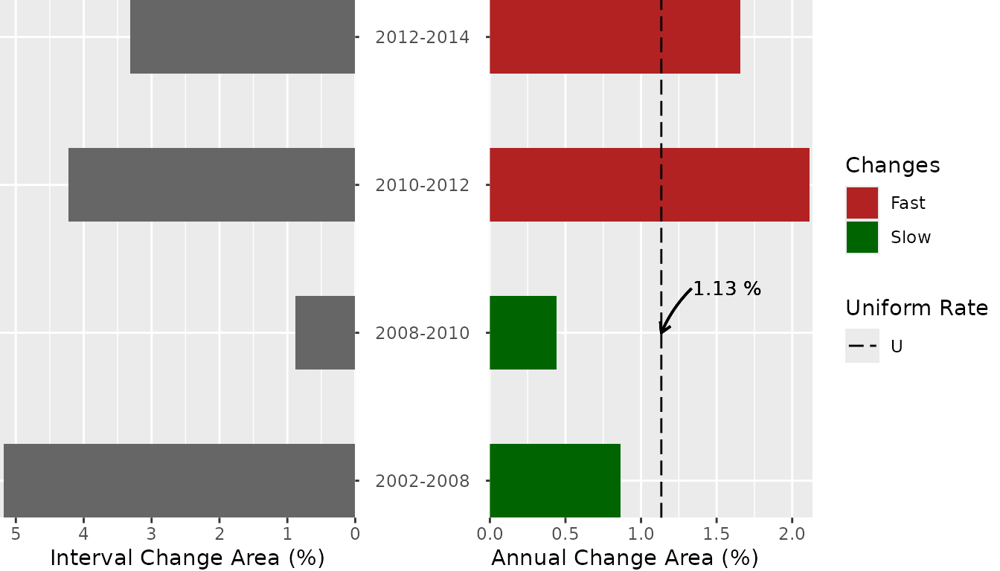
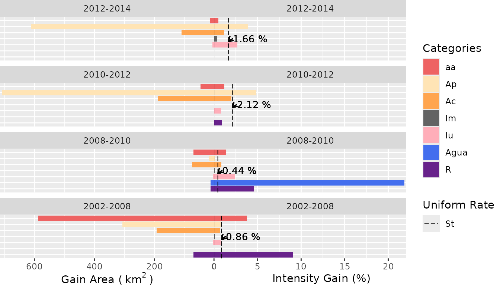
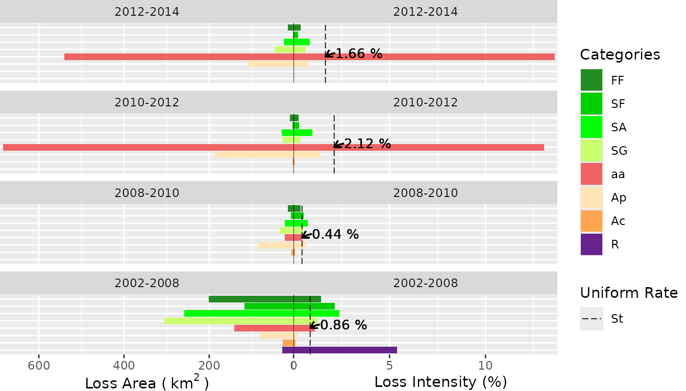
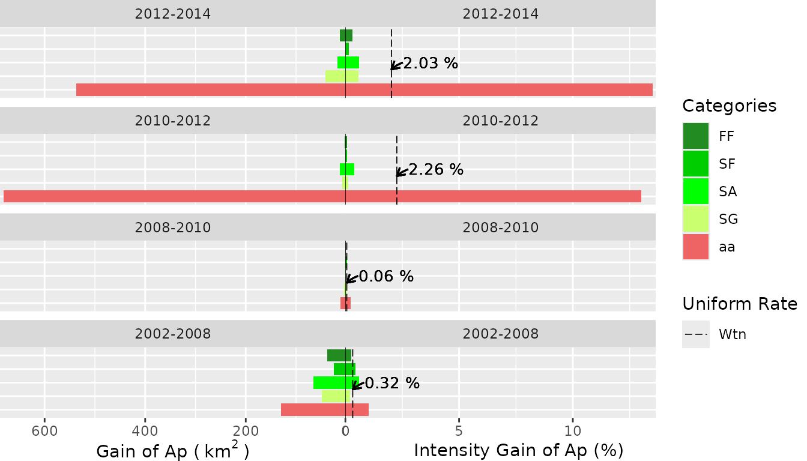
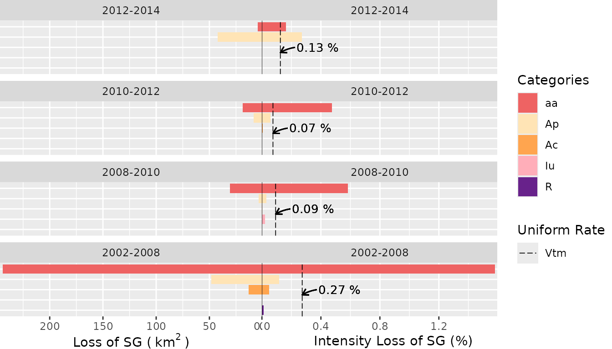
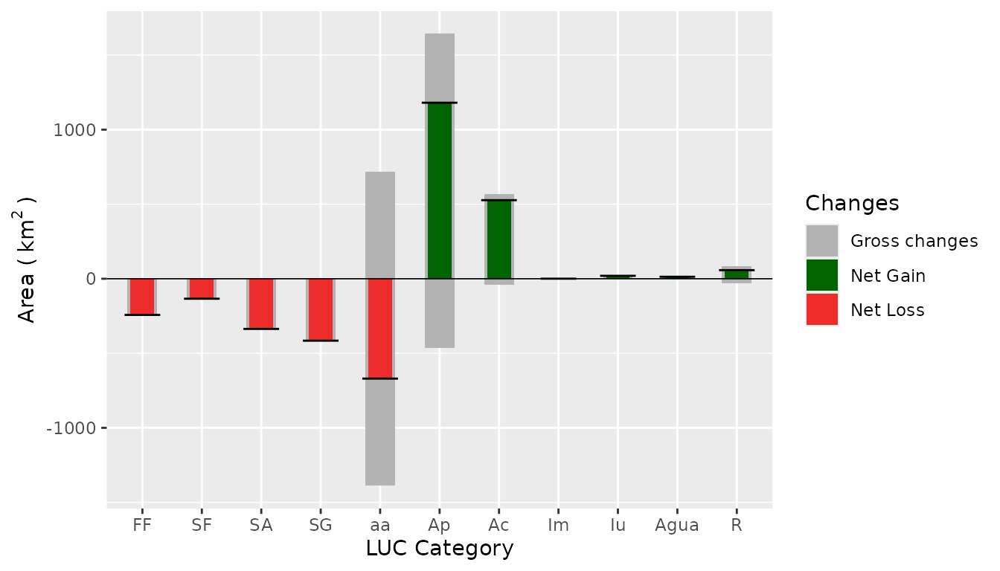
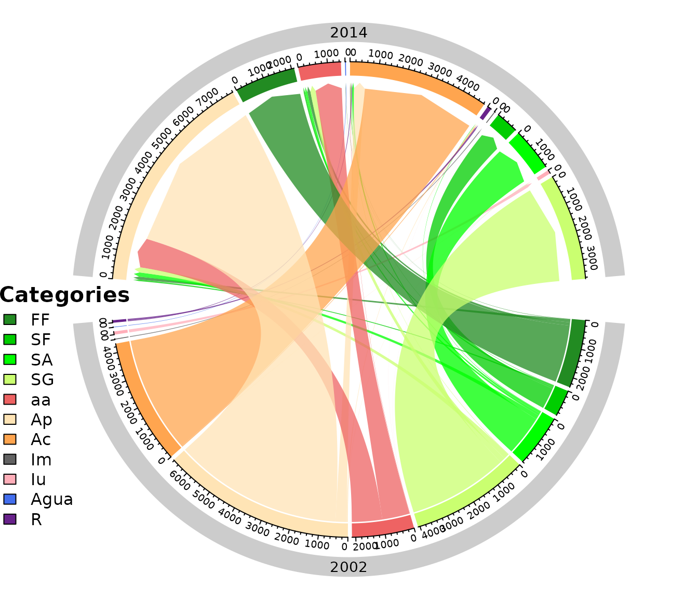
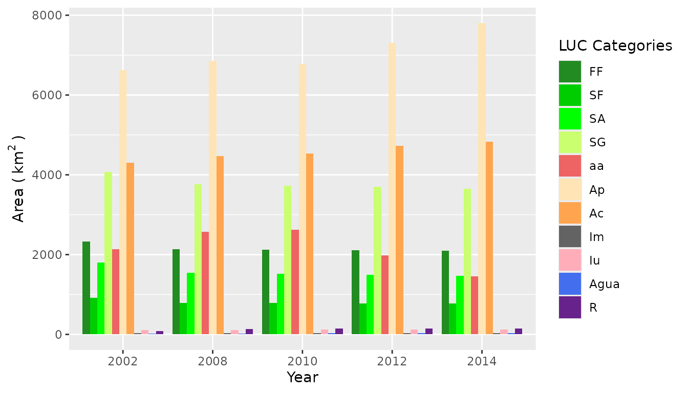
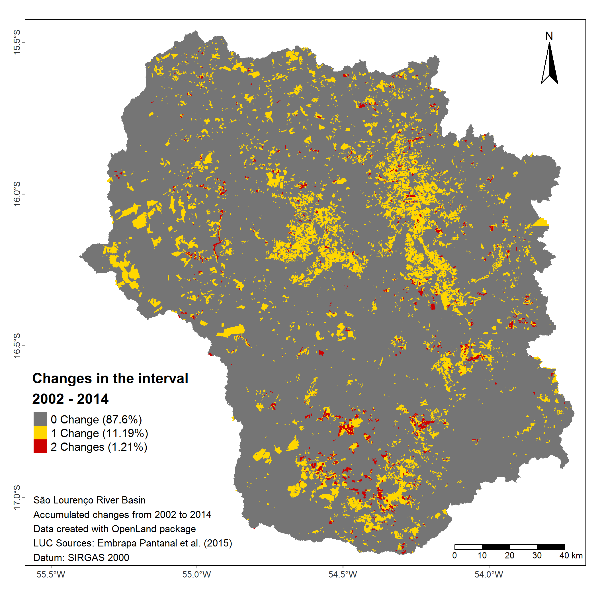

Quick introduction to the OpenLand package
Source:vignettes/openland_vignette.Rmd
openland_vignette.RmdThis is a Vignette on how to use the OpenLand package for exploratory analysis of Land Use and Cover (LUC) time series.
Description of the tool
OpenLand is an open-source R package for the analysis of land use and cover (LUC) time series. It includes support for consistency check and loading spatiotemporal raster data and synthesized spatial plotting. Several LUC change (LUCC) metrics in regular or irregular time intervals can be extracted and visualized through one- and multistep sankey and chord diagrams. A complete intensity analysis according to (Aldwaik and Pontius 2012) is implemented, including tools for the generation of standardized multilevel output graphics.
São Lourenço river Basin example dataset
The OpenLand functionality is illustrated for a LUC dataset of São
Lourenço river basin, a major Pantanal wetland contribution area as
provided by the 4th edition of the Monitoring
of Changes in Land cover and Land Use in the Upper Paraguay River Basin
- Brazilian portion - Review Period: 2012 to 2014 (Embrapa Pantanal, Instituto SOS Pantanal, and
WWF-Brasil 2015). The time series is composed by five LUC maps
(2002, 2008, 2010, 2012 and 2014). The study area of approximately
22,400 km2 is located in the Cerrado Savannah biom in the
southeast of the Brazilian state of Mato Grosso, which has experienced a
LUCC of about 12% of its extension during the 12-years period, including
deforestation and intensification of existing agricultural uses. For
processing in the OpenLand package, the original multi-year shape file
was transformed into rasters and then saved as a 5-layer
RasterStack (SaoLourencoBasin), available from
a public repository (10.5281/zenodo.3685229)
as an .RDA file which can be loaded into
R.
Input data constraints
The function contingencyTable() for data extraction
demands as input a list of raster layers (RasterBrick,
RasterStack or a path to a folder containing the rasters).
The name of the rasters must be in the format (“some_text”
+ “underscore” + “the_year”) like
“landscape_2020”. In our example we included the
SaoLourencoBasin RasterStack:
# first we load the OpenLand package
library(OpenLand)
# The SaoLourencoBasin dataset
SaoLourencoBasin
#> class : RasterStack
#> dimensions : 6372, 6546, 41711112, 5 (nrow, ncol, ncell, nlayers)
#> resolution : 30, 30 (x, y)
#> extent : 654007.5, 850387.5, 8099064, 8290224 (xmin, xmax, ymin, ymax)
#> crs : +proj=utm +zone=21 +south +ellps=GRS80 +units=m +no_defs
#> names : landscape_2002, landscape_2008, landscape_2010, landscape_2012, landscape_2014
#> min values : 2, 2, 2, 2, 2
#> max values : 13, 13, 13, 13, 13Extracting the data from raster time series
After data extraction contingencyTable() saves multiple
grid information in tables for the next processing steps. The function
returns 5 objects: lulc_Multistep, lulc_Onestep, tb_legend, totalArea,
totalInterval.
The first two objects are contingency tables. The first one
(lulc_Multistep) takes into account grid cells of the
entire time series, whereas the second (lulc_Onestep)
calculates LUC transitions only between the first and last year of the
series. The third object (tb_legend) is a table
containing the category name associated with a pixel value and a
respective color used for plotting. Category values and colors are
created randomly by contingencyTable(). Their values must
be edited to produce meaningful plot legends and color schemes. The
fourth object (totalArea) is a table containing the
extension of the study area in km2 and in pixel units. The
fifth table (totalInterval) stores the range between
the first (Yt=1) and the last year(YT) of the
series.
Fields, format, description and labeling of a
lulc_Multistep table created by the
contingencyTable are given in the following:
| [Yt, Yt+1] | Categoryi | Categoryj | Ctij(km2) | Ctij(pixel) | Yt+1 - Yt | Yt | Yt+1 |
|---|---|---|---|---|---|---|---|
chr |
int |
int |
dbl |
int |
int |
int |
int |
| Period of analysis from time point t to time point t+1 | A category at interval’s initial time point | A category at interval’s final time point | Number of elements in km2 that transits from category i to category j | Number of elements in pixel that transits from category i to category j | Interval in years between time point t and time point t+1 | Initial Year of the interval | Final Year of the interval |
| Period | From | To | km2 | QtPixel | Interval | yearFrom | yearTo |
In the lulc_Onestep table, the Yt+1 terms are replaced by YT, where T is the number of time steps, i.e., YT is the last year of the series.
For our study area,
contingencyTable(input_raster = SaoLourencoBasin, pixelresolution = 30)
returns the following outputs:
{r SL_2002_2014 <- contingencyTable(input_raster = SaoLourencoBasin, pixelresolution = 30)
SL_2002_2014$lulc_Multistep[1:10, ]
#> # A tibble: 10 × 8
#> Period From To km2 QtPixel Interval yearFrom yearTo
#> <chr> <int> <int> <dbl> <int> <int> <int> <int>
#> 1 2002-2008 2 2 6543. 7269961 6 2002 2008
#> 2 2002-2008 2 10 1.56 1736 6 2002 2008
#> 3 2002-2008 2 11 55.2 61320 6 2002 2008
#> 4 2002-2008 2 12 23.9 26609 6 2002 2008
#> 5 2002-2008 3 2 37.5 41649 6 2002 2008
#> 6 2002-2008 3 3 2133. 2370190 6 2002 2008
#> 7 2002-2008 3 7 155. 172718 6 2002 2008
#> 8 2002-2008 3 11 7.48 8307 6 2002 2008
#> 9 2002-2008 3 12 0.356 395 6 2002 2008
#> 10 2002-2008 3 13 0.081 90 6 2002 2008
SL_2002_2014$lulc_Onestep[1:10, ]
#> # A tibble: 10 × 8
#> Period From To km2 QtPixel Interval yearFrom yearTo
#> <chr> <int> <int> <dbl> <int> <int> <int> <int>
#> 1 2002-2014 2 2 6169. 6854816 12 2002 2014
#> 2 2002-2014 2 9 2.39 2651 12 2002 2014
#> 3 2002-2014 2 10 10.4 11513 12 2002 2014
#> 4 2002-2014 2 11 412. 457631 12 2002 2014
#> 5 2002-2014 2 12 29.7 33015 12 2002 2014
#> 6 2002-2014 3 2 110. 121762 12 2002 2014
#> 7 2002-2014 3 3 2091. 2323665 12 2002 2014
#> 8 2002-2014 3 7 116. 129304 12 2002 2014
#> 9 2002-2014 3 9 7.00 7774 12 2002 2014
#> 10 2002-2014 3 11 9.32 10359 12 2002 2014
SL_2002_2014$tb_legend
#> # A tibble: 11 × 3
#> categoryValue categoryName color
#> <int> <fct> <chr>
#> 1 2 DUL #ABBBE8
#> 2 3 XSE #A13F3F
#> 3 4 LKC #EAACAC
#> 4 5 MTO #002F70
#> 5 7 VRE #8EA4DE
#> 6 8 FNR #F3C5C5
#> 7 9 ZCN #5F1415
#> 8 10 EIF #DCE2F6
#> 9 11 FHX #F9DCDC
#> 10 12 SZE #EFF1F8
#> 11 13 HGF #F9EFEF
SL_2002_2014$totalArea
#> # A tibble: 1 × 2
#> area_km2 QtPixel
#> <dbl> <int>
#> 1 22418. 24908860
SL_2002_2014$totalInterval
#> [1] 12Editing the values in the categoryName and
color columns
As mentioned before, the tb_legend object must be edited with the real category name and colors associated with the category values. In our case, the category names and colors follow the conventions given by Instituto SOS Pantanal and WWF-Brasil (2015) (access document here, page 17). The Portuguese legend acronyms were maintained as defined in the original dataset.
| Pixel Value | Legend | Class | Use | Category | color |
|---|---|---|---|---|---|
| 2 | Ap | Anthropic | Anthropic Use | Pasture | #FFE4B5 |
| 3 | FF | Natural | NA | Forest | #228B22 |
| 4 | SA | Natural | NA | Park Savannah | #00FF00 |
| 5 | SG | Natural | NA | Gramineous Savannah | #CAFF70 |
| 7 | aa | Anthropic | NA | Anthropized Vegetation | #EE6363 |
| 8 | SF | Natural | NA | Wooded Savannah | #00CD00 |
| 9 | Agua | Natural | NA | Water body | #436EEE |
| 10 | Iu | Anthropic | Anthropic Use | Urban | #FFAEB9 |
| 11 | Ac | Anthropic | Anthropic Use | Crop farming | #FFA54F |
| 12 | R | Anthropic | Anthropic Use | Reforestation | #68228B |
| 13 | Im | Anthropic | Anthropic Use | Mining | #636363 |
## editing the category name
SL_2002_2014$tb_legend$categoryName <- factor(c("Ap", "FF", "SA", "SG", "aa", "SF",
"Agua", "Iu", "Ac", "R", "Im"),
levels = c("FF", "SF", "SA", "SG", "aa", "Ap",
"Ac", "Im", "Iu", "Agua", "R"))
## add the color by the same order of the legend,
## it can be the color name (eg. "black") or the HEX value (eg. #000000)
SL_2002_2014$tb_legend$color <- c("#FFE4B5", "#228B22", "#00FF00", "#CAFF70",
"#EE6363", "#00CD00", "#436EEE", "#FFAEB9",
"#FFA54F", "#68228B", "#636363")
## now we have
SL_2002_2014$tb_legend
#> # A tibble: 11 × 3
#> categoryValue categoryName color
#> <int> <fct> <chr>
#> 1 2 Ap #FFE4B5
#> 2 3 FF #228B22
#> 3 4 SA #00FF00
#> 4 5 SG #CAFF70
#> 5 7 aa #EE6363
#> 6 8 SF #00CD00
#> 7 9 Agua #436EEE
#> 8 10 Iu #FFAEB9
#> 9 11 Ac #FFA54F
#> 10 12 R #68228B
#> 11 13 Im #636363At this point, one can choose to run the Intensity Analysis or create
a series of non-spatial representations of LUCC, such like sankey
diagrams with the sankeyLand() function, chord diagrams
using the chordDiagramLand() function or bar plots showing
LUC evolution trough the years using the barplotLand()
function, since they do not depend on the output of Intensity
Analysis.
Intensity Analysis
Intensity Analysis (IA) is a quantitative method to analyze LUC maps at several time steps, using cross-tabulation matrices, where each matrix summarizes the LUC change at each time interval. IA evaluates in three levels the deviation between observed change intensity and hypothesized uniform change intensity. Hereby, each level details information given by the previous analysis level. First, the interval level indicates how size and rate of change varies across time intervals. Second, the category level examines for each time interval how the size and intensity of gross losses and gross gains in each category vary across categories for each time interval. Third, the transition level determines for each category how the size and intensity of a category’s transitions vary across the other categories that are available for that transition. At each level, the method tests for stationarity of patterns across time intervals (Aldwaik and Pontius 2012).
Within the OpenLand package, the intensityAnalysis()
function computes the three levels of analysis. It requires the object
returned by the contingencyTable() function and that the
user predefines two LUC categories n and m.
Generally, n is a target category which experienced
relevant gains and m a category with important losses.
testSL <- intensityAnalysis(dataset = SL_2002_2014,
category_n = "Ap", category_m = "SG")
# it returns a list with 6 objects
names(testSL)
#> [1] "lulc_table" "interval_lvl" "category_lvlGain"
#> [4] "category_lvlLoss" "transition_lvlGain_n" "transition_lvlLoss_m"The intensityAnalysis() function returns 6 objects:
lulc_table, interval_lvl, category_lvlGain, category_lvlLoss,
transition_lvlGain_n, transition_lvlLoss_m. Here, we adopted an
object-oriented approach that allows to set specific methods for
plotting the intensity objects. Specifically, we used the S4 class,
which requires the formal definition of classes and methods (Chambers 2008). The first object is a
contingency table similar to the lulc_Multistep object with the unique
difference that the columns From and To are
replaced by their appropriate denominations according to the LUC
legend.
The second object interval_lvl is an
Interval object, the third
category_lvlGain and the fourth
category_lvlLoss are Category
objects, whereas the fifth
transition_lvlGain_n and the sixth
transition_lvlLoss_m are
Transition objects.
An Interval object contains one slot containing a table
of interval level result (St and U
values). A Category object contains three slots: the
first contains the colors associated with the legend items as name
attributes, the second slot contains a table of the category
level result (gain (Gtj) or loss
(Lti) values) and the third slot contains a table
storing the results of a stationarity test. A Transition
object contains three slots: the first contains the color associated
with the respective legend item defined as name attribute, the second
slot contains a table of the transition level result
(gain n (Rtin and Wtn) or loss m
(Qtmj and Vtm) values). The third slot
contains a table storing the results of a stationarity test. Hereby,
Aldwaik and Pontius (2012) consider a
stationary case only when the intensities for all time intervals reside
on one side of the uniform intensity, i.e. that they are always smaller
or larger than the uniform rate over the whole period.
The Graphs
Outcomes of intensity analysis
Visualizations of the IA results are obtained from the
plot(intensity-object) function. For more details on the
function arguments, please see the documentation of the
plot() method.
Interval Level
plot(testSL$interval_lvl,
labels = c(leftlabel = "Interval Change Area (%)",
rightlabel = "Annual Change Area (%)"),
marginplot = c(-8, 0), labs = c("Changes", "Uniform Rate"),
leg_curv = c(x = 2/10, y = 3/10))
Category Level
- Gain Area
plot(testSL$category_lvlGain,
labels = c(leftlabel = bquote("Gain Area (" ~ km^2 ~ ")"),
rightlabel = "Intensity Gain (%)"),
marginplot = c(.3, .3), labs = c("Categories", "Uniform Rate"),
leg_curv = c(x = 5/10, y = 5/10))
- Loss Area
plot(testSL$category_lvlLoss,
labels = c(leftlabel = bquote("Loss Area (" ~ km^2 ~ ")"),
rightlabel = "Loss Intensity (%)"),
marginplot = c(.3, .3), labs = c("Categories", "Uniform Rate"),
leg_curv = c(x = 5/10, y = 5/10))
Transition Level
- Gain of the
ncategory (“Ap”)
plot(testSL$transition_lvlGain_n,
labels = c(leftlabel = bquote("Gain of Ap (" ~ km^2 ~ ")"),
rightlabel = "Intensity Gain of Ap (%)"),
marginplot = c(.3, .3), labs = c("Categories", "Uniform Rate"),
leg_curv = c(x = 5/10, y = 5/10))
- Loss of the
mcategory (“SG”)
plot(testSL$transition_lvlLoss_m,
labels = c(leftlabel = bquote("Loss of SG (" ~ km^2 ~ ")"),
rightlabel = "Intensity Loss of SG (%)"),
marginplot = c(.3, .3), labs = c("Categories", "Uniform Rate"),
leg_curv = c(x = 1/10, y = 5/10))
Miscellaneous visualization tools
OpenLand provides a bench of visualization tools of LUCC metrics. One-step transitions can be balanced by net and gross changes of all categories through a combined bar chart. Transitions between LUC categories can be detailed by a circular chord chart, based on the Circlize package (Gu et al. 2014). An implementation of Sankey diagram based on the networkD3 package (Allaire et al. 2017) allow the representation of one- and multistep LUCC between categories. Areal development of all LUC categories throughout the observation period can be visualized by a grouped bar chart.
Net and Gross gain and loss
netgrossplot(dataset = SL_2002_2014$lulc_Multistep,
legendtable = SL_2002_2014$tb_legend,
xlab = "LUC Category",
ylab = bquote("Area (" ~ km^2 ~ ")"),
changesLabel = c(GC = "Gross changes", NG = "Net Gain", NL = "Net Loss"),
color = c(GC = "gray70", NG = "#006400", NL = "#EE2C2C")
)
Chord Diagram (2002 - 2014)
chordDiagramLand(dataset = SL_2002_2014$lulc_Onestep,
legendtable = SL_2002_2014$tb_legend)
Sankey Multi Step
sankeyLand(dataset = SL_2002_2014$lulc_Multistep,
legendtable = SL_2002_2014$tb_legend) 2002 2008 2010 2012 2014Sankey One Step
sankeyLand(dataset = SL_2002_2014$lulc_Onestep,
legendtable = SL_2002_2014$tb_legend) 2002 2014An Evolution Bar Plot
barplotLand(dataset = SL_2002_2014$lulc_Multistep,
legendtable = SL_2002_2014$tb_legend,
xlab = "Year",
ylab = bquote("Area (" ~ km^2~ ")"),
area_km2 = TRUE)
Other functions
Two auxiliary functions allow users to check for consistency in the
input gridded LUC time series, including extent, projection, cell
resolution and categories. The summary_map() function
returns the number of pixel by category of a single raster layer,
whereas summary_dir() lists the spatial extension, spatial
resolution, cartographic projection and the category range for the LUC
maps. OpenLand enables furthermore the spatial screening of LUCC
frequencies for one or a series of raster layers. The
acc_changes() returns for LUC time series the number of
times a pixel has changed during the analysed period, returning a grid
layer and a table with the percentages of transition numbers in the
study area.
testacc <- acc_changes(SaoLourencoBasin)
testaccPlotting the map with the tmap function:
tmap_options(max.raster = c(plot = 41711112, view = 41711112))
acc_map <- tmap::tm_shape(testacc[[1]]) +
tmap::tm_raster(
style = "cat",
labels = c(
paste0(testacc[[2]]$PxValue[1], " Change", " (", round(testacc[[2]]$Percent[1], 2), "%", ")"),
paste0(testacc[[2]]$PxValue[2], " Change", " (", round(testacc[[2]]$Percent[2], 2), "%", ")"),
paste0(testacc[[2]]$PxValue[3], " Changes", " (", round(testacc[[2]]$Percent[3], 2), "%", ")")
),
palette = c("#757575", "#FFD700", "#CD0000"),
title = "Changes in the interval \n2002 - 2014"
) +
tmap::tm_legend(
position = c(0.01, 0.2),
legend.title.size = 1.2,
legend.title.fontface = "bold",
legend.text.size = 0.8
) +
tmap::tm_compass(type = "arrow",
position = c("right", "top"),
size = 3) +
tmap::tm_scale_bar(
breaks = c(seq(0, 40, 10)),
position = c(0.76, 0.001),
text.size = 0.6
) +
tmap::tm_credits(
paste0(
"Case of Study site",
"\nAccumulate changes from 2002 to 2014",
"\nData create with OpenLand package",
"\nLULC derived from Embrapa Pantanal, Instituto SOS Pantanal, and WWF-Brasil 2015."
),
size = 0.7,
position = c(0.01, -0, 01)
) +
tmap::tm_graticules(
n.x = 6,
n.y = 6,
lines = FALSE,
#alpha = 0.1
labels.rot = c(0, 90)
) +
tmap::tm_layout(inner.margins = c(0.02, 0.02, 0.02, 0.02))
tmap::tmap_save(acc_map,
filename = "vignettes/acc_mymap.png",
width = 7,
height = 7)
Accumulated changes in pixels in the interval 2002 - 2014 at four time points (2002, 2008, 2010, 2012, 2014)